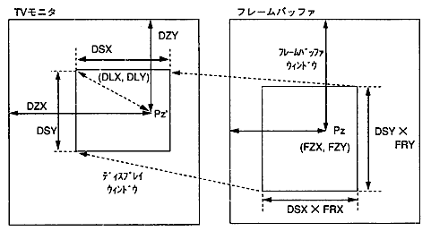
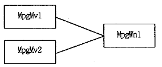

★PROGRAMMER'S GUIDE
★MPEGライブラリ
★PROGRAMMER'S GUIDE
★MPEGライブラリ
図5.1 ディスプレイウィンドウとフレームバッファウィンドウ

ビジュアルエフェクト | 制御するパラメータ | 効 果 |
|---|---|---|
ズーム | FRX，FRY | ディスプレイウインドウを固定し、表示されている映像をズームします。 |
スクロール | FZX，FZY | 映像を拡大率を変えずに左右上下に移動します。 |
ムーブ | DZX，DZY | ズームポイントを変えずに表示基準位置を移動させます。 |
ピーピング | DLX，DLY | 映像の表示相対位置を変えながら、フレームバッファの映像をのぞき見ることができます。 |
ワイプ | DLX，DLY，DSX，DSY | 映像の倍率は変わらずに、ディスプレイウィンドウの大きさが変化します。 |
エクスパンド | DLX，DLY，DSX，DSY | 映像の大きさの変化に合わせて、ディスプレイウィンドウの大きさも変化します。 |

/* 352×240画素の画像を等倍でホスト転送出力する */ /* 表示サイズの変更 */ MPG_WnSetSize(mpgwn, (352/2), 240); /* 倍率の設定 */ MPG_WnSetDispRatio(mpgwn, 2000, 1000); /* ホスト転送出力実行 */
★PROGRAMMER'S GUIDE
★MPEGライブラリ